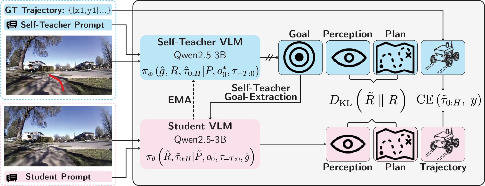
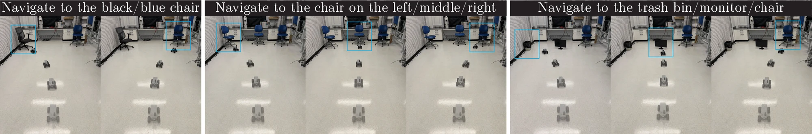
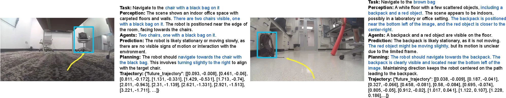

Summary
Language provides a natural interface for humans to specify and reason about goals, but training language-conditioned robotic policies and reasoning typically requires expensive manual annotations. We propose Action Self-Distillation (ASD), a method for learning language-conditioned reasoning for robotic navigation without human-annotated language or reasoning labels. ASD uses an open-source VLM, which contains broad world knowledge and reasoning capabilities, as both a teacher network and a student policy. During training, the self-teacher receives privileged trajectory feedback and infers the underlying navigation goal together with goal-oriented reasoning. The student is then trained to condition on the inferred navigation goal, predict future ego-frame trajectory, and provide a description of the scene semantics, plan, and reasoning, from onboard observations alone. Across 13 challenging indoor and outdoor real-world navigation tasks, our method improves success rate over the strongest baseline by 30% in indoor settings, 30% on multi-stage tasks, and achieves 95% success rate on outdoor tasks, validating that privileged trajectory feedback can enable self-distillation for scalable generalist navigation policies without human annotations.

The self-teacher uses privileged ground-truth trajectory feedback to extract scene semantics, infer a language goal, and generate reasoning traces explaining the demonstrated behavior. Blue arrows denote the feedback-conditioned information flow to the self-teacher, while pink arrows denote the student pathway. The student observes only deployable inputs and learns to align its reasoning and trajectory tokens with the self-teacher, removing the need for external goal or reasoning annotations.
(+30% over OmniVLA)
annotations required
Action Self-Distillation
ASD turns trajectory-only navigation data into goal-conditioned reasoning supervision using a single pretrained VLM in two roles. In the self-teacher pass, the ground-truth future trajectory is projected as a polyline overlay onto the front-view observation. This privileged feedback lets the model infer the language goal that explains the demonstrated behavior, along with a structured reasoning trace. In the student pass, the same model sees only deployable onboard inputs and is trained to condition on that inferred goal while predicting both the reasoning trace and the future ego-frame trajectory.
Reasoning tokens are supervised by a KL divergence against the self-teacher's logits, and trajectory tokens by cross-entropy against the ground-truth trajectory. The self-teacher is an exponential moving average of the student, so all language supervision is generated inside the training loop — no human-written goals or reasoning traces are ever used. At deployment the teacher and the privileged trajectory are removed entirely, and a human operator supplies a free-form language goal in place of the inferred one.

Language Steerability
Within a single fixed environment, ASD produces distinct trajectories depending on the language goal — following directional commands, grounding different object categories, and distinguishing object attributes such as color. This is notable because training uses one-to-one scene-goal supervision: each observation is paired with a single language goal and a single demonstrated trajectory, with no counterfactual trajectory augmentation. By contrast, methods such as OmniVLA rely on broader multimodal training with over 9,500 hours of data collected across 10 platforms.

Steerability demonstration. ASD under color (left), direction (middle), and object (right) prompts. Within the same environment, the policy can be directed to different targets.
Multi-Stage Navigation
ASD executes compound goals that decompose into several sequential sub-tasks. On the
two-stage Doorway task the policy reaches 80% success, and on the four-stage
Hallway task — navigate to the door, pass through it, turn right, then
follow the hallway — it reaches 60%. OmniVLA fails the longer task entirely at 0%,
while NaVILA reaches only 30% on the shorter one.
Real-World Results
We deploy ASD zero-shot on a FrodoBot EarthRover Mini with a single front-facing camera. The policy uses Qwen2.5-3B as its base VLM and is trained on a mixture of RECON and FrodoBots-2K — both primarily outdoor datasets with no language annotations. Every indoor result below is therefore an out-of-distribution transfer.
Indoor Language-Conditioned Navigation
| Directions | Objects | Multi-stage | ||||||||
|---|---|---|---|---|---|---|---|---|---|---|
| Method | Straight door− |
Left chair+ |
Right chair* |
Blue chair− |
Trash bin− |
Chair+ | Monitor* | Doorway+ | Hallway* | Avg. |
| OmniVLA | 0.8 | 0.9 | 0.2 | 0.7 | 1.0 | 0.4 | 0.2 | 0.7 | 0.0 | 0.54 |
| NaVILA | 0.3 | 0.2 | 0.1 | 0.4 | 0.1 | 0.3 | 0.2 | 0.3 | 0.5 | 0.27 |
| Qwen2.5-ASD (ours) | 0.9 | 1.0 | 0.8 | 1.0 | 0.9 | 0.9 | 0.7 | 0.8 | 0.6 | 0.84 |
Success rates over four initializations per task, varying the starting position and orientation of the robot and objects. −, +, and * denote easy, medium, and hard tasks. Difficulty increases with the number of candidate directions for directional tasks and the number of objects in the scene for object-centric tasks. On the three hard tasks, ASD outperforms the leading baseline by 60%, 50%, and 10% respectively.
Outdoor Language-Conditioned Navigation
| Method | Sidewalk | Statue | Tree | Car | Avg. |
|---|---|---|---|---|---|
| OmniVLA | 1.0 | 0.6 | 1.0 | 1.0 | 0.90 |
| NaVILA | 0.9 | 0.1 | 0.0 | 0.3 | 0.33 |
| Qwen2.5-ASD (ours) | 1.0 | 0.8 | 1.0 | 1.0 | 0.95 |
Campus environment, four tasks. Statue requires grounding an out-of-distribution
object category, where ASD outperforms OmniVLA by 20% and NaVILA by 70%.
Comparison to Foundation Models
| Method | Success rate ↑ | Completion time (s) ↓ |
|---|---|---|
| OmniVLA | 0.9 | 25.3 |
| NaVILA | 0.2 | 28.9 |
| Qwen2.5-3B | 0.0 | — |
| Claude Opus 4.7 | 0.7 | 846.1 |
| Qwen2.5-ASD (ours) | 1.0 | 15.3 |
Zero-shot evaluation on the Left chair task. Vanilla Qwen2.5-3B produces
degenerate, physically infeasible trajectories, so its completion time is omitted. Claude Opus
4.7 reasons plausibly and identifies targets correctly, but its per-step inference latency
makes the resulting completion time impractical for closed-loop control.
Single-Stage Navigation

Single-stage navigation across diverse indoor and outdoor environments. Ordered left to
right: two indoor tasks (right chair and monitor) and three outdoor
tasks (car, statue, and tree).
Reasoning Legibility
The self-teacher prompt enforces a fixed output structure — Task, Perception, Agents, Prediction, and Planning — followed by the executable trajectory, which constrains the model to ground its reasoning in observable scene content. The resulting traces align with both the goal and the predicted trajectory. On the left, instructed to navigate to the chair with a black bag, the model reasons to turn right toward the target. On the right, despite a person waving a red pool noodle as a visual distractor, ASD retains the correct goal — the brown bag — and predicts a reasonable trajectory.

Reasoning legibility. Representative findings from our real-world experiments, showing predicted trajectories alongside the corresponding highlighted reasoning traces.
Limitations
While ASD removes the need for language annotations, it still relies on demonstration trajectories as privileged feedback; future work could replace these with interactive human feedback for more precise task-level guidance. The quality of self-generated goals and reasoning also depends on the pretrained VLM, and may degrade in ambiguous scenes, with small targets, or under fine-grained spatial instructions.
BibTeX
@inproceedings{feng2026asd,
title = {Training Generalist Navigation Policies via Action Self-Distillation},
author = {Feng, Bowen and Wang, Keqin and Yang, Yulong and Joshi, Amogh
and Allen-Blanchette, Christine and Shah, Dhruv and Heide, Felix},
booktitle = {Conference on Robot Learning (CoRL)},
year = {2026},
}